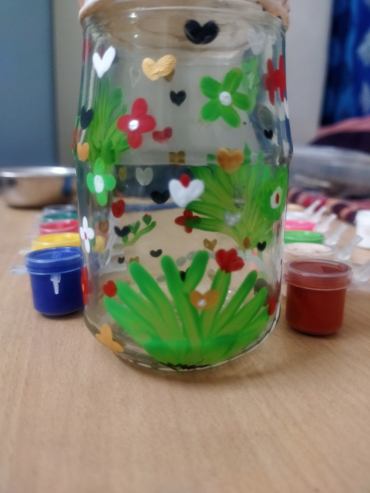

"Grass Pot" - Created on March 5, 2023

"Colour Pot" - Created on March 12, 2022

"Channapattana Doll" - Created on March 22, 2021

"Budda Doll" - Created on April 26, 2020
Welcome to my collection of cherished artworks. Each piece holds a special memory.
"Grass Pot" - Created on March 5, 2023
"Colour Pot" - Created on March 12, 2022
"Channapattana Doll" - Created on March 22, 2021
"Budda Doll" - Created on April 26, 2020